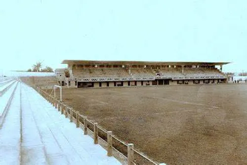
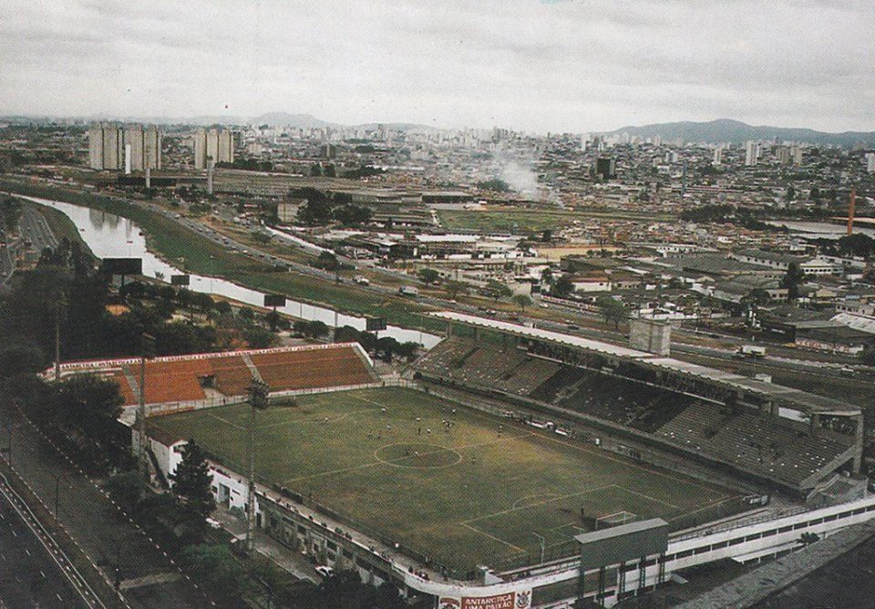
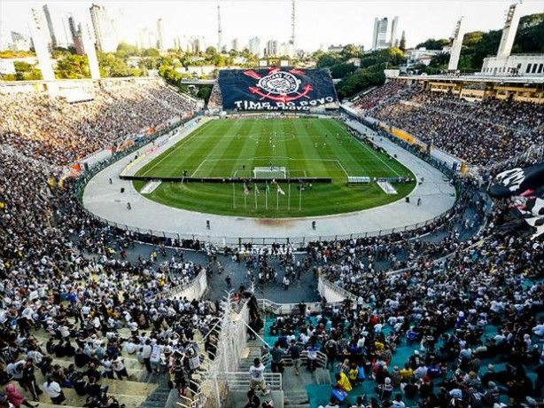
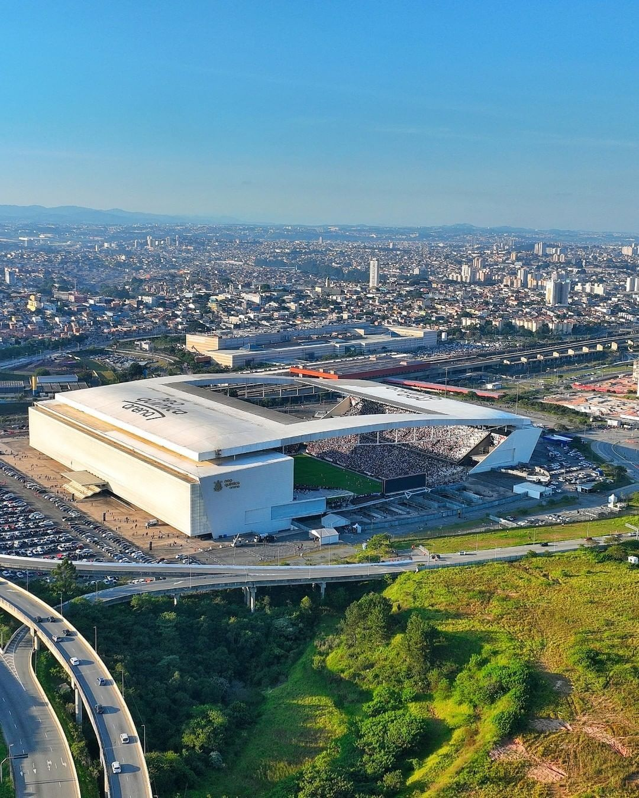

AS CASAS DO CORINTHIANS
AO LONGO DE SUA HISTÓRIA, O CORINTHIANS PASSOU POR DIFERENTES CAMPOS E ESTÁDIOS ATÉ CHEGAR À SUA CASA ATUAL.

PONTE GRANDE
O Corinthians passou a utilizar seu primeiro estádio próprio na região da Ponte Grande.

PARQUE SÃO JORGE
O Parque São Jorge tornou-se uma das casas mais importantes da história do Corinthians.

PACAEMBU
Durante décadas, o Pacaembu foi palco de grandes momentos do Corinthians e ficou marcado na memória da Fiel Torcida.

NEO QUÍMICA ARENA
Inaugurada em 2014, a Neo Química Arena tornou-se a principal casa do Corinthians.